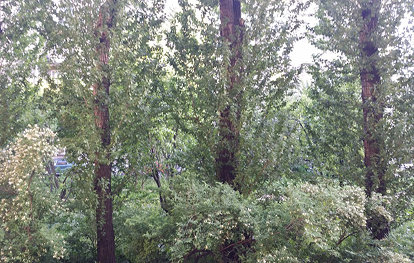

Just a blog so far
Наконец-то! Компания открыта, временный офис снят, можно начинать искать людей! Первым ищу квантового химика в Петербурге (ЗП 120—150 т.р.). В виде бонуса в конце прелюбопытнейшая задача про белье на морозе.
Сегодня хороший вид из окна офиса:

В детстве я думал, что стану ученым. Но недовольство политикой в науке и пьянящее чувство, когда ты создаешь что-то новое (в науке ты открываешь то, что как бы и без тебя есть) сподвигли меня уйти в программирование. Четырнадцать лет назад мы основали компанию SPB Software и начали заниматься разработкой мобильных приложений, стали №1 в мире по продажам приложений для ОС Windows Mobile. Семь лет назад мы выделили зарождающийся бизнес мобильного телевидения в отдельную компанию и теперь SPB TV — одна из лидирующих компаний в мире в этой области. Потом Яндекс купил SPB Software, я перешел работать в Яндекс и занимался там мобильностью. Могу честно сказать: Яндекс — это одна из лучших компаний в мире!
Недавно я решил вернуться в науку, точнее в образование. Рост человеческих знаний за последние 50—100 лет потрясает. По современным меркам, биология, как наука, почти не существовала еще 70 лет назад. Когда я был маленьким, о компьютерах можно было ничего не знать, а сейчас они стали важнее, чем иностранный язык. Мы достигли невероятных успехов в физике. Вот только образование не успевает за всем этим.
То, как преподают физику, химию и биологию, не сильно поменялось за последние 50 лет. Если мы не бросим все силы в компактификацию знаний, не научимся передавать их следующим поколениям в разы эффективнее, чем делаем сейчас, то получим ситуацию, когда из школы выходят узкие специалисты. А это очень плохо. Это затормозит прогресс, так как многие открытия лежат на стыке областей. Я отец четырех сыновей, и не хочу им такой участи. Как же передать наши знания более компактно?
Помню, в школе нам полгода рассказывали о том, как устроена клетка. А потом я увидел вот это видео (посмотрите, оно гениально):
И это видео мне объяснило больше, чем полгода школьной биологии. Завтра я постараюсь описать, как можно компактнее передавать научные знания. А пока к вакансиям.
Итак, я ищу пока трех людей:
Сегодня опишу, какого химика я ищу, завтра выложу описание про 3D-дизайнера, а после завтра про dev lead-а.
Кто нужен: химик от бога. Человек, которому искренне нравится химия, кто читает по ней книги, у кого руки чешутся «что-то похимичить». При этом знает химию не поверхностно, а глубоко. Может, если надо, спуститься на уровень квантовой физики и понять (посчитать, запрограммировать) эффекты на этом уровне. Помимо химии и квантовой физики еще умеет неплохо программировать. Может численно запрограммировать расчеты. Ну и вообще, с компьютером «на ты».
Первая задача, которая перед нами стоит — это научиться эмулировать и визуализировать неорганические химические реакции. Работа сразу начнется по двум фронтам:
После того как будут получен первый прототип эмуляции и визуализации реакций, мы начнем параллельно работать над составом химического набора: какие вещества и оборудование в него включить, описание опытов, создание нового оборудования, и т.д.
Для этой работы потребуется иметь широкий кругозор по химии, опыт расчета энергий методами квантовой химии, хорошее знание квантовой физики и опыт программирования на языках C++ или Java. Поскольку часть команды будет в Лондоне, необходимо, что бы устное или письменное общение на английском не вызывало затруднений.
Условия:
А еще в офисе есть микроскоп, рубанок, 3D-принтер и дымогенератор ;) Подробнее о том, как мы будем работать расскажу завтра или послезавтра.
Послать свое резюме на позицию квантового химика
Известный факт, что мокрое белье на морозе высыхает. А вопрос, собственно, — почему? Чтобы было интереснее, можете задаться вопросом: а почему ложка не испаряется? И стол не испаряется со временем. А лед испаряется.Почему так? В чем разница?